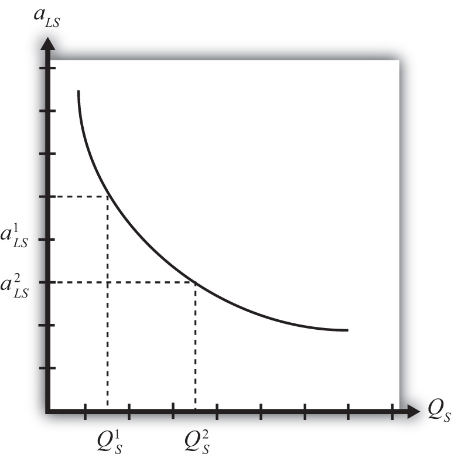
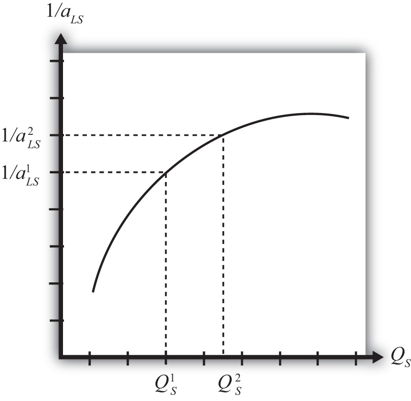

Economies of scale in production means that production at a larger scale (more output) can be achieved at a lower cost (i.e., with economies or savings). A simple way to formalize this is to assume that the unit labor requirement in the production of a good is a function of the level of output produced. In Figure 6.1 "Unit-Labor Requirement with Economies of Scale", we present a graph of the unit labor requirement in steel production as a function of the scale (level of output) of production. At production level QS1, the unit labor requirement is given by aLS1. If production were to rise to QS2, then the unit labor requirement would fall to aLS2. This means that at the higher level of output, it requires less labor (i.e., fewer resources or a lower cost) per unit of output than it required at the smaller scale.
Figure 6.1 Unit-Labor Requirement with Economies of Scale
A secondary assumption is that the additional savings (or economies) fall as the scale increases. Graphically, this means that the slope of the curve in Figure 6.1 "Unit-Labor Requirement with Economies of Scale" becomes less negative as the scale of production (output) rises. Economists sometimes refer to this feature by saying the function is concave to the origin; that is, it is bowed inward. The reason this assumption is made is because it seems to correspond to what is observed in the world. We expect that the degree of cost savings will be largest in the earliest stages of production, when labor division is likely to be the easiest and most effective. This assumption, although a realistic feature, is not necessary to explain trade, however.
With a simple adjustment, it is possible to show that increasing returns to scaleThe feature of many production processes in which the productivity of a product increases as the scale of production rises. in production means that an increase in resource usage by, say, x percent results in an increase in output by more than x percent. In Figure 6.2 "Productivity with Increasing Returns to Scale", we plot labor productivity in steel production when production exhibits increasing returns to scale. This curve is derived by plotting the reciprocal of the unit labor requirement (i.e., 1/aLS) for each output level in Figure 6.2 "Productivity with Increasing Returns to Scale".
Figure 6.2 Productivity with Increasing Returns to Scale
Note that as output (scale) increases from QS1 to QS2, labor productivity (given by the reciprocal of the unit labor requirement) also rises. In other words, output per unit of labor input increases as the scale of production rises, hence increasing returns to scale.
Another way to characterize economies of scale is with a decreasing average cost curve. Average costs, AC, are calculated as the total costs to produce output Q, TC(Q), divided by total output. Thus AC(Q) = TC(Q)/Q. When average costs decline as output increases, it means that it becomes cheaper to produce the average unit as the scale of production rises, hence resulting in economies of scale.
Economies of scale are most likely to be found in industries with large fixed costs in production. Fixed costs are those costs that must be incurred even if production were to drop to zero. For example, fixed costs arise when large amounts of capital equipment must be put into place even if only one unit is to be produced and if the costs of this equipment must still be paid even with zero output. In this case, the larger the output, the more the costs of this equipment can be spread out among more units of the good. Large fixed costs and hence economies of scale are prevalent in highly capital-intensive industries such as chemicals, petroleum, steel, automobiles, and so on.
It is worth noting that the assumption of economies of scale in production can represent a deviation from the assumption of perfectly competitive markets. In most perfectly competitive models, it is assumed that production takes place with constant returns to scale (i.e., no economies). This means that the unit cost of production remains constant as the scale of production increases. When that assumption is changed, it can open up the possibility of positive profits and strategic behavior among firms. Because there are numerous ways to conceive of strategic interactions between firms, there are also numerous models and results that could be obtained. To avoid some of these problems, a number of models have been developed that retain some of the key features of perfect competition while allowing for the presence of economies of scale as well.
Jeopardy Questions. As in the popular television game show, you are given an answer to a question and you must respond with the question. For example, if the answer is “a tax on imports,” then the correct question is “What is a tariff?”